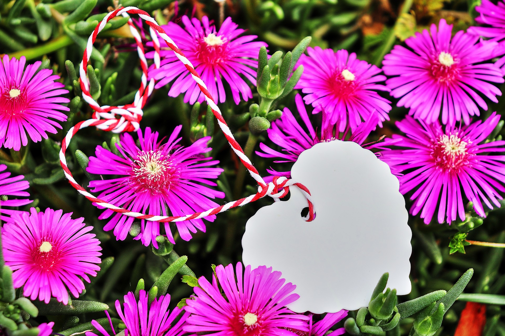

Data brasileira
No Brasil, o Dia dos Namorados é comemorado em 12 de junho, na véspera de Santo Antônio, o santo casamenteiro.
O Dia dos Namorados é uma data dedicada ao carinho entre casais. No Brasil, a comemoração acontece em 12 de junho, com presentes, flores e momentos especiais.
No Brasil, o Dia dos Namorados é comemorado em 12 de junho, na véspera de Santo Antônio, o santo casamenteiro.
Flores, chocolates, cartões e jantares românticos são formas tradicionais de demonstrar afeto.
A data tem origem religiosa em São Valentim e, no Brasil, foi adaptada por motivos comerciais e culturais.


Curiosidade: No Brasil, o Dia dos Namorados é comemorado em 12 de junho porque é a véspera do dia de Santo Antônio, conhecido como santo casamenteiro.